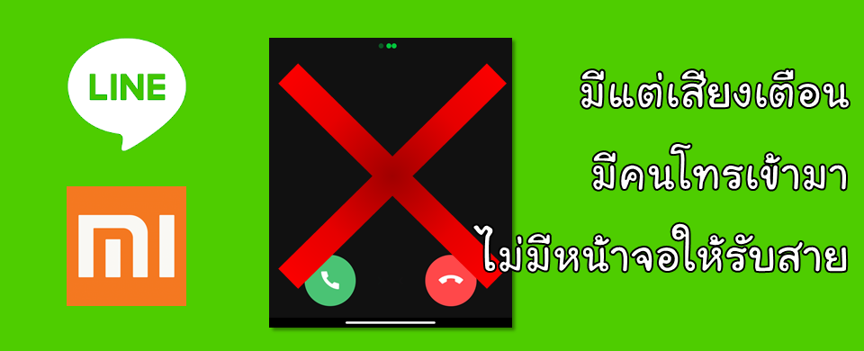

ใช้ MIUI 11/12 (มือถือของ Xiaomi) คนโทร LINE มาไม่ขึ้นหน้าจอให้รับสาย

ผมเพิ่งเปลี่ยนจากมือถือ iPhone มาใช้ Android ยี่ห้อ Xiaomi ทำให้ผมเจอปัญหามากมายที่ไม่เจอบน iPhone ก็แก้ไขปัญหากันไป พอแก้ไขได้ผมเลยอยากมาแชร์ว่าแก้ไขยังไง เพราะโปรแกรม LINE ในไทยนี่เรียกว่าใช้กันแทบทุกคน ทุกครัวเรือน เป็นโปรแกรมสื่อสารที่ใช้โทรฟรี (ก็เสียค่าเน็ตเหมาไปแล้ว) ปัญหาคือ พออัพเดทระบบแล้ว LINE ไม่ขึ้นหน้าจอให้รับสายเวลาคนโทรเข้ามาครับ ตอนแรกก็งงว่าจะให้รับยังไง กว่าจะหาเจอว่ามันไปอยู่จากแถบแจ้งเตือนด้านบนก็สายหลุดไปแล้ว
พอจับทางได้ก็รับสายโดยการปัดจอลง เพื่อแสดงการแจ้งเตือนแล้วกดปุ่มรับสาย โห...!!! โคตรไม่สะดวก ทำไมหน้าจอรับสายมันหายไปไหน
ผมเลยตามหาวิธีแก้ไขมาได้ดังนี้ครับ
วิธีแก้ไขปัญหา ตั้งค่าแสดงหน้าจอรับสายใหม่
วิธีแก้ไขก็ตามภาพด้านล่างเลยครับ ผมทำไว้ 2 แบบคือ ภาษาไทย กับ ภาษาอังกฤษ แต่หลัก ๆ คือ เข้าไปแก้ไขตรงส่วนของการแจ้งเตือน เรื่องการโทร ให้กำหนดความสำคัญเป็น สูง หรือ High
ดูวิธีแก้ไขใน Youtube
ใครชอบดูแบบคลิปวีดีโอ ผมบันทึกหน้าจอ แล้วจิ้มให้ดูกันเลย
ดูวิธีแก้ไขแบบภาพทีละขั้นตอน
ถ้าดูวิธีใน Youtube แล้วไม่ค่อยชัด มาดูชัด ๆ ในภาพด้านล่างกันครับ
ถ้าใครแก้ไขแล้วไม่หาย ลองคอมเม้นไว้ เดี๋ยวถ้าผมช่วยได้ จะมาตอบให้ครับ